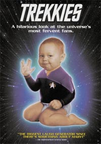
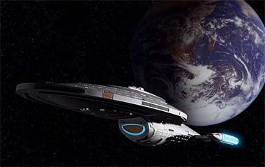
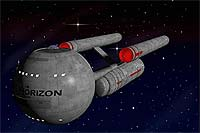
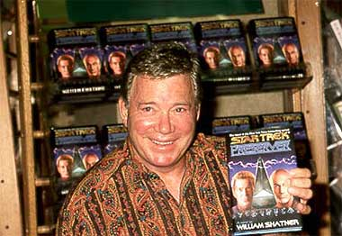

|

Publicado originalmente
em 2001

Encontrando
a luz não fim do tnel
(e não o trem
vindo na direo oposta...)

|
Nomes como Sherry Lansing, Rick Berman, Merri Howard, Paula Block, Brannon Braga e até o esforado ("pero não mucho") atual produtor-executivo de Voyager, Ken Biller --pessoas que parecem mais interessadas na embalagem e na renda do produto do que não produto em si. Eu estava me tornando repetitivo (como o bom jornalista e webmaster deste site veio, em meu socorro, me alertar), mas o pior que também j estava me cansando. Seja ao ver a primeira metade da nada brilhante ltima temporada de Voyager, ou ao ler as fofocas e non-sequiturs dos bastidores atravs de sites e fontes internacionais, eu realmente estava perdendo o flego, minha libido com relao a Jornada nas Estrelas e a tudo relacionado a ela. O pior, nem a Jeri Ryan estava conseguindo chamar minha ateno! A sim eu vi que as coisas estavam preocupantes.  So (e foram) tempos difceis para isso, e eu não tenho certeza se quero me tornar um profeta raivoso (ou pior, um crtico apenas pelo prazer de criticar), gritando as hipocrisias de um assunto to importante como esse aos ouvidos dos inocentes. Ento, decidi que nessa coluna, ao invs de discutir o que está errado com Jornada (ad nauseum), eu vou discutir o que está certo com o franchise. E por isso que eu decidi falar dos outros colunistas desse site. por isso que eu decidi falar do Trek Brasilis. Vamos comear com o ilustre webmaster e pedra filosofal desse almirantado todo, Salvador Nogueira. Jornalista da Folha de So Paulo e da revista Sci-Fi News (outro exemplo de amadurecimentão e profissionalismo na rea, graas a pessoas como Paulo Maffia), Nogueira um eterno otimista, batalhador e trekker incansvel (sim, isso foi um elogio e não houve sarcasmo) que consegue até sorrateiramente colocar matrias srias sobre Jornada na Folha (algum viu a foto de Picard num artigo não jornal na semana passada?) e eu realmente não sei onde o homem arranja tanto tempo para tanta coisa --ser que existem mais de um dele, como não último filme de ficção do Arnold, aquele dos clones? (Como co-editor do TrekWeb, colaborador do Flagship e do Section 31 e colunista tanto desse site como do MagicBus, além de ter dois empregos, ou um e meio se voc perguntar para minha mulher, bem que eu queria saber o segredo de Mr. Nogueira --seria paixo pelo que faz?) Mas vamos parar de puxar o saco (afinal todo mundo sabe que eu s puxo o saco de mulher mesmo). O fato que Mr. Nogueira conseguiu criar um site que a princpio seguia os moldes de sites americanos, como o TrekWeb.com ou o TrekToday, simplesmente traduzindo as notcias postadas nesses sites, dando a princpio leves comentários sobre elas. E j nessa origem me chamou a ateno.  Cansado de ver sites nacionais com muito visual mas péssimo contedo (não tenho medo de citar nomes como Orgnias e Paradas Obrigatrias, além de diversos f-clubes e lojas disfarados de sites de informao), logo mandei e-mails a esse tal de Nogueira elogiando sua empreitada. E de l para c muita coisa mudou: o site fez entrevistas exclusivas com atores e pessoal da produção de Jornada (e pelo que sei, mais vem a) e, mais importante, começou a dar opinies cada vez mais profundas a abalizadas sobre as notcias que postava, deixando de ser um (bom) clone nacional daqueles sites internacionais e adquirindo sua prpria identidade. E ainda tem mais: reuniu uma equipe de redatores e colunistas que nunca antes havia se visto na comunidade de fãs ou entusiastas de algo no Brasil, seja Jornada, Arquivo-X ou Britney Spears. Um pessoal aberto, inteligente, diferente, no-bitolado e acima de tudo bem-informado. O completo oposto do esteretipo de f que se encontra nas convenes e nos documentrios da Denise Crosby, que não cansa de escrever bobagens em revistas, sites e outros lugares onde se encontram termos como warp e orelhas pontudas. Pessoas como o prolixo e analisador Luiz Castanheira, que se prolixo e escreve muito a respeito de seus pet peeves, que vo de Deep Space Nine ao produtor Steven Bocho (ou seria David E. Kelley?), porque muita paixo e conhecimentão para se colocar em poucas linhas. Cláudio Silveira e Fernando Penteriche vo além do que a imprensa e os escritores americanos revelaram sobre o legado dos filmes de cinema e da Nova Gerao, e recheiam suas colunas com um timo senso de humor, colocando suas posies críticas de uma maneira to lcida que mesmo quando eu discordo (ei, eu sou o cara que se emocionou com a dramaticidade em "Generations" e bateu palmas para o esforo e roteiro original de Bill Shatner em "Jornada V" --vai entender...), eu consigo ver claramente a idia e a opinio que eles querem passar. E eu poderia dizer e mesma coisa sobre a divertida e inteligente Lia Matos (não falei que elogiar mulheres interessantes comigo mesmo?), o safado do Daniel Sasaki (safado porque consegue que eu me interesse em ler suas colunas de Voyager mesmo depois da minha ltima overdose de crianas Borgs, anomalias e hologramas) e de Eduardo Cope (se voc acha que algo com o nome de "Real Trek" chato e trekkie, leia o Ocaso do Bom Velhinho). Mas não quero novamente ficar repetitivo (embora em alguns momentos até valha a pena). Esse pessoal certamente tem as credenciais e o chuptzpahá para dar aos seus assuntos a justia necessria. E, rapaz, eles entregam a encomenda. As colunas so saborosas e informativas. Francamente, de um ponto de vista totalmente egosta e safado (apesar dos elogios que certos baluartes e annimos do fandom nacional dirigem a mim, eu sou egosta e safado s vezes), ate mais divertido ler as outras colunas do Trek Brasilis e as opinies de outros fãs (trekkies ou no) em seu Frum e em outros newsgroups do que escrever meus artigos, aqui ou nos sites americanos, ou até mesmo fazer os meus recentes reviews dos episódios semanalmente exibidos não USA Network no site de variedades MagicBus.com.br (uma tentativa minha e dos webmasters do Magic Bus de introduzir e promover o ressurgimentão das quatro encarnaes de Jornada na programacao Sci-Fi do USA a um público leigo e no-trekkie). Por isso e muito mais bom ver que Jornada nos está sofrendo uma revitalizao na mdia brasileira (enquanto sofre uma desintregao na norte-americana), mas seu fandom consegue passar toda essa revitalizao para ns, atravs de textos que, ao contrrio dos últimos episódios de Voyager (ok, eu não consegui passar sem essa), estão cada vez mais originais e interessantes.  Com certeza eles não vo me decepcionar --e eu espero que eles não se decepcionem também. Bill Shatner, o mestre da ironia e do bom senso, e que, ao que parece, adora uma boa leitura, ficaria orgulhoso...  |
 Voc
sabe, eu ia originalmente usar esse espao para mais uma vez
malhar e jogar tijolos contra aqueles que atualmente parecem
interessados apenas em produzir de roteiros e episódios medianos
a cafeteiras e bottons de segunda categoria para o que antes (ou
até uns anos atrês) era o franchise mais criativo e chique da
indstria do entretenimentão norte-americano.
Voc
sabe, eu ia originalmente usar esse espao para mais uma vez
malhar e jogar tijolos contra aqueles que atualmente parecem
interessados apenas em produzir de roteiros e episódios medianos
a cafeteiras e bottons de segunda categoria para o que antes (ou
até uns anos atrês) era o franchise mais criativo e chique da
indstria do entretenimentão norte-americano.